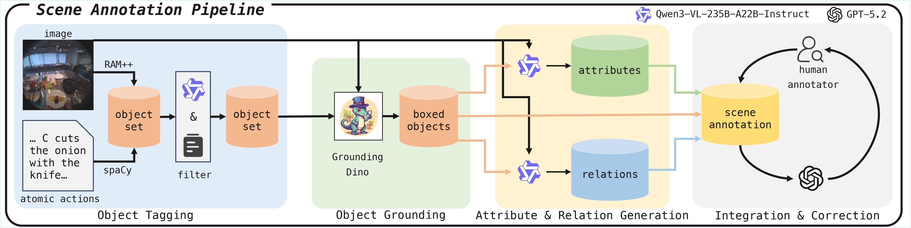
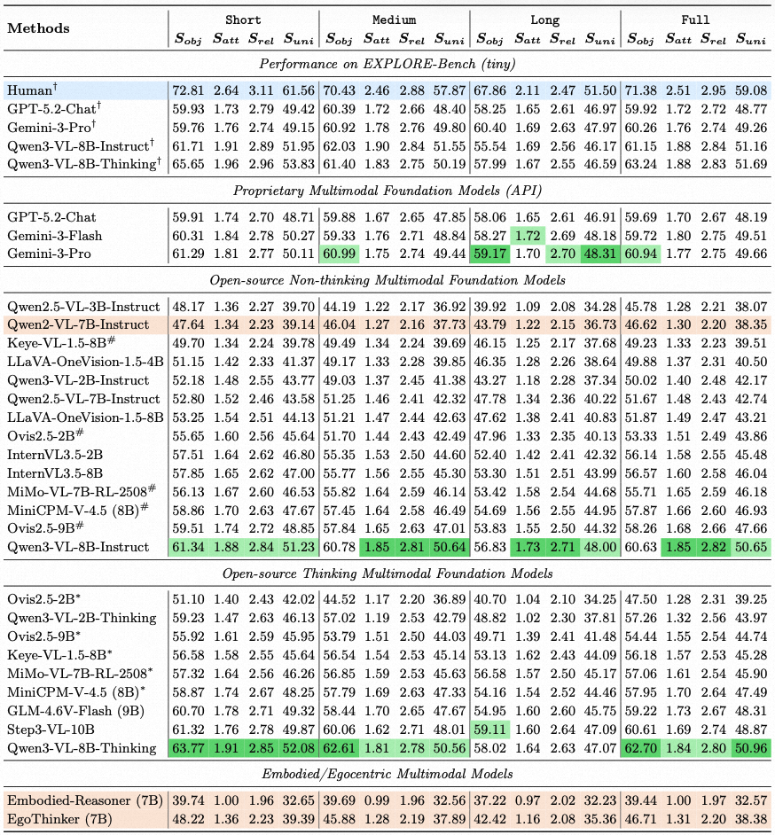
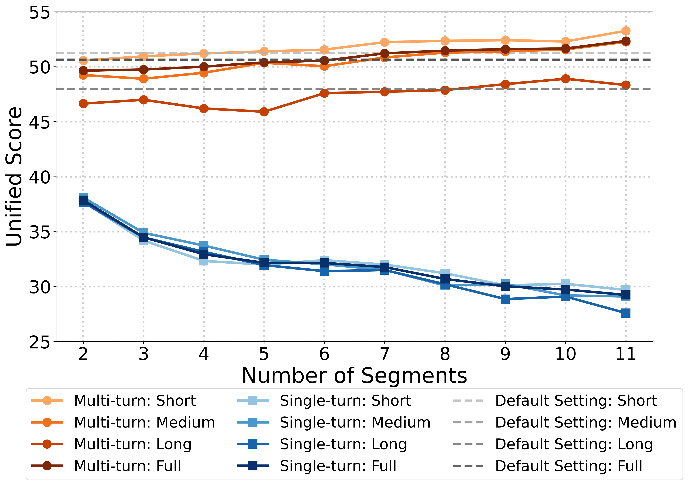
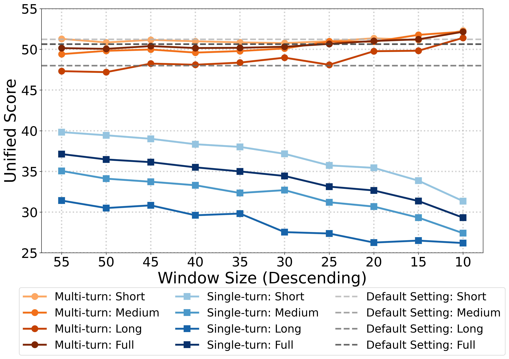
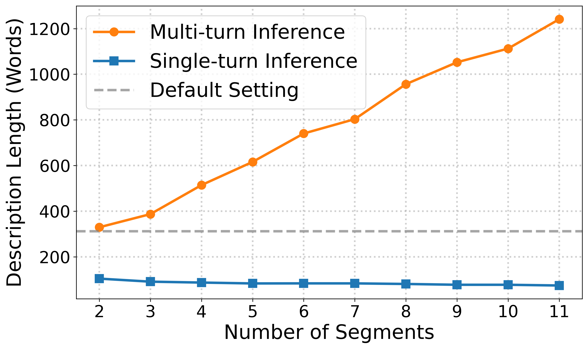
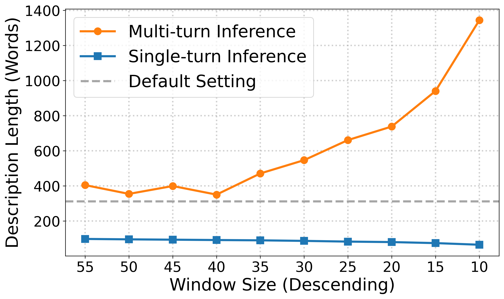
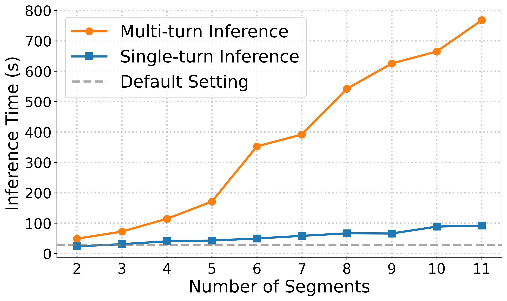
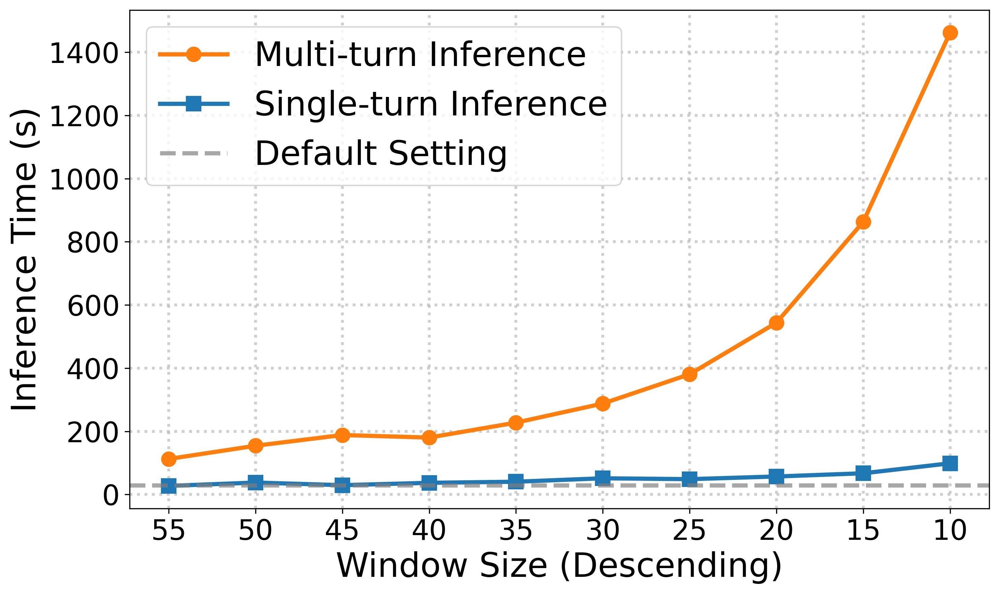

Overview
Motivation
While several existing egocentric benchmarks include evaluations related to state prediction, they typically focus on instant (or short-term) and localized state changes (e.g., the state of a single object after a visual cue) and do not provide a systematic protocol to evaluate scene-level predictions under long action horizons. Therefore, we design a scalable annotation pipeline and build a new benchmark that enables fine-grained and quantitative evaluation of long-horizon egocentric scene prediction.
Key Features
- Long Action Horizons: 113 atomic actions on average
- Fine-grained Evaluation: Objects, attributes, and relations
- Numerous Objects: 20000+ object instances
- Diverse Scenarios: 12+ real-world scenarios
Scene Annotation Pipeline

Scene annotation pipeline. Rather than having the MLLM generate annotations directly from the images, we adopt a multi-step pipeline to ensure object coverage and the accuracy of attributes and relations, greatly reducing the load of manual annotation required.
Evaluation Results

Evaluation results on EXPLORE-Bench. Short, Medium and Long mean the subsets with short, medium and long atomic-action sequences, respectively. Full denotes the full dataset. Dark green and light green indicate the best and the second best result among all models. Orange denotes using Qwen2-VL-7B-Instruct as the base model. ✝ denotes results on EXPLORE-Bench (tiny) set. # and * represent the non-thinking and thinking mode, respectively.
Experiments
To study how well stepwise reasoning works in the non-thinking model, we first segment the atomic action sequence in two ways: (1) by a fixed number of segments, and (2) by a fixed window size. We then evaluate the performance of Qwen3-VL-8B-Instruct across subsets under two inference strategies: (1) single-turn inference with stepwise reasoning, and (2) multi-turn inference with stepwise reasoning. The results are shown in the figures below. Short, Medium, and Long denote the subsets with short, medium, and long atomic-action sequences. Full denotes the full dataset. Note that the two dashed lines corresponding to "Default Setting: Medium" and "Default Setting: Full" overlap.

Unified score vs. number of segments

Unified score vs. window size

Description length vs. number of segments

Description length vs. window size

Inference time vs. number of segments

Inference time vs. window size
Case Studies
Citation
BibTeX
@article{yourname2026explorebench,
author = {Author One and Author Two and Author Three and Author Four and Author Five},
title = {EXPLORE-Bench: Egocentric Scene Prediction with Long-Horizon Reasoning},
journal = {arXiv preprint arXiv:XXXX.XXXXX},
year = {2026},
url = {https://arxiv.org/abs/XXXX.XXXXX}
}